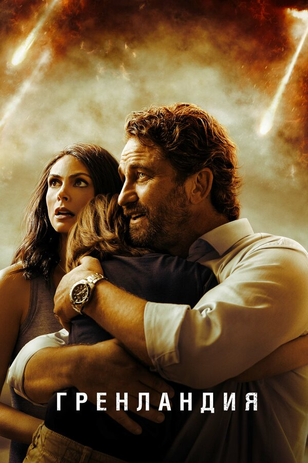
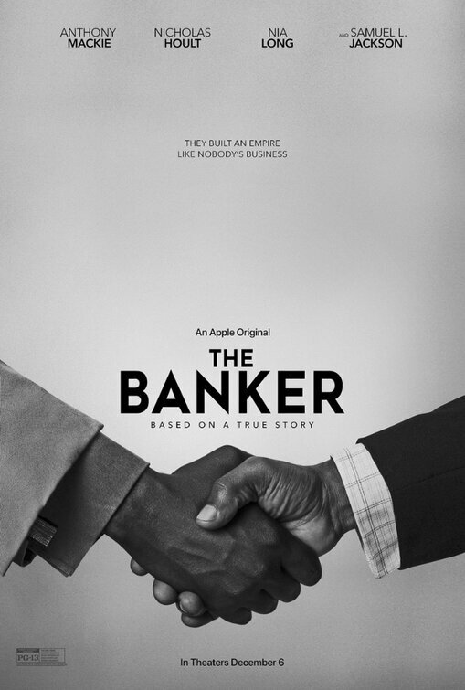
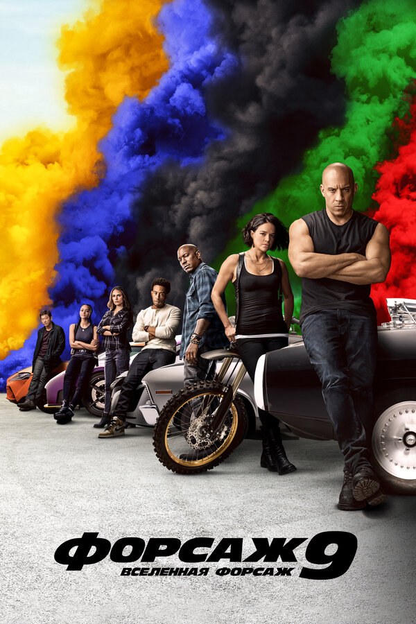

Во всех СМИ твердят о приближающейся к Земле комете, а инженера-строителя Джона Гэррити больше волнует, как сохранить разваливающийся брак. Сегодня у них намечена вечеринка с соседями, и, отправившись в супермаркет за продуктами. Поначалу он не придаёт этому значения, но вскоре ударная волна от столкновения первых частей кометы с Землёй докатывается до их тихого пригорода, а по всем каналам начинают транслировать ужасающие кадры разрушений.

История афроамериканских бизнес-партнеров Джо Морриса и Бернарда Гарретта, которые в 1950-х годах основали успешное агентство недвижимости. Они нанимают подставного белого руководителя компании, а сами притворяются простыми дворником и водителем. На вершине успеха над ними нависает угроза разоблачения.
История 17-летнего Дэрина, который узнаёт, что его подруга смертельно больна. Он решает подарить девушке целую жизнь, уместив её в год, который ей остался.

Доминик Торетто ведет спокойную жизнь в глуши, но опасность всегда где-то рядом. Команде приходится снова собраться, чтобы спасти Мистера Никто после крушения самолёта, на котором перевозили пойманную хакершу Сайфер. На месте аварии команда обнаруживает загадочное устройство и вскоре сталкивается с опасным преступником и самым безбашенным водителем из всех, с кем они имели дело. Ситуация усложняется тем, что этот человек — брат Доминика Джейкоб, которого много лет назад изгнали из семьи.